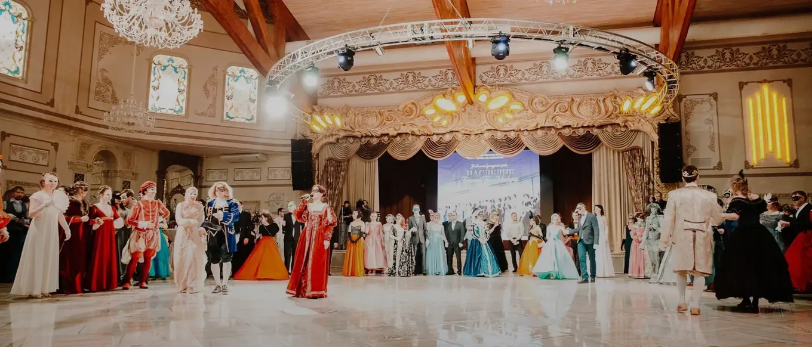
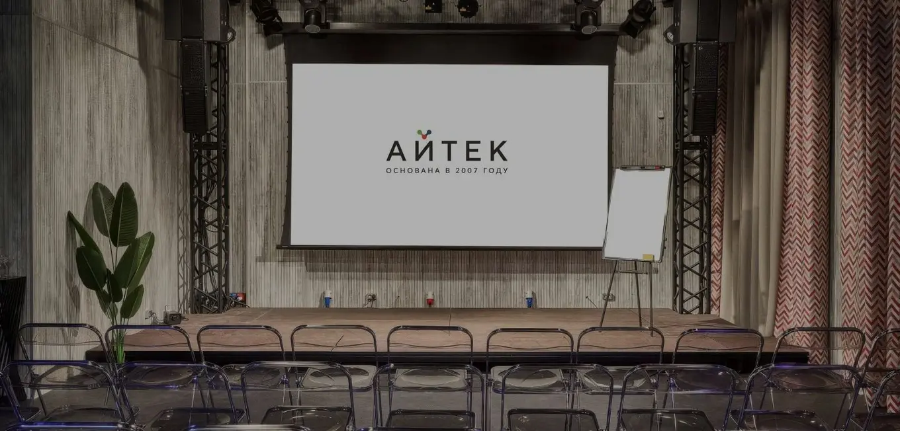

Государственная Библиотека Дом Пашкова
Москва · 30 рабочих дней
Комплексное оснащение актового зала в городе Кисловодск

Стоимость и срок указаны для этого объекта. Смета нового проекта зависит от помещения, комплектации и состава работ.
На объекте заказчика нужно установить комплект мультимедийного оборудования, который будет работать как единая система звука, видео и коммутации. Эта система должна легко подключаться к компьютерам, чтобы быстро и удобно получать доступ к разной информации и показывать её на экране. Всё это нужно для проведения разных мероприятий: презентаций с видео и звуком, интерактивных аудиоконференций и просмотра фильмов.
Специалистами ГК Айтек был успешно завершён проект по комплексному оснащению объекта современным мультимедийным оборудованием под ключ. В ходе реализации проекта был произведён весь спектр работ — от поставки оборудования и разработки проектной документации до финальной отладки систем. Состав реализованного комплекса: Проекционный экран 4 х 5м и проектор с мощностью светового потока 11000 люмен Звуковые линейный массивы, состоящие из 2-х ВЧ и СЧ элементов и сабвуфера Театральное и профильное освещение сцены и зала Централизованное управление всем оборудованием с единого пульта
Главной сложностью данного проекта были сжатые сроки, в которые нужно было установить и ввести в эксплуатацию весь комплекс оборудования и выделенный под проект бюджет. После выезда на объект, специалисты нашей компании, предложили заказчику технологическое решение, бюджет которого полностью удовлетворял требованиям комиссии.
Для сокращения дистанций кабельных трасс и скрытого электромонтажа, нашими специалистами были предложены кабельные трассы, идущие по периметру всего помещения под потолочным пространством. Оснавная сложность заключалась в том, что помещение уже находилось на стадии чистовой отделкиименно. К моменту монтажа потолки в помещении представляли собой монолит из гипсокартона, из-за чего доступ к подпотолочному пространству был ограничен. Для решения этой проблемы наши инженеры спроектировали и установили несколько технологических люков в невидимой области зала с шагом в 7 метров. Эти работы были выполнены в течении 2-х дней.
На основании проведённого анализа, было предложено установить проекционный экран Classic Solution с размером экрана 400х500 см и ламповый проектор Epson EB-Z11000, с мощностью светового потока 11000 ansi. Данная яркость проектора была выбрана не случайно, одно из основных требований к проектору было - это проведение мероприятий в освещённом помещении кинозала. В связи с ограниченным бюджетом и минимальными требованиями к качеству изображения - разрешаемая способность проектора составила 1024х768 точек на дюйм.
После проведения акустического моделирования помещения инженеры нашей компании пришли к выводу о целесообразности установки нескольких активных корпусных громкоговорителя, отвечающие за средние и низкие частоты на фронтальную часть сцены и несколько активных корпусных громкоговорителя по периметру всего помещения. Самым сложным в процессе установки оказались подвес и позиционирование акустических систем. Это было связано с тем, что проверить правильность позиционирования акустических систем было возможно только после запуска всей системы в тестовом режиме. Для монтажа акустических систем были использованы оригинальные крепления PROEL. Так как конструктив стен представлял из себя монолитный гипсокартон, в качестве дополнительной страховки были применены механические анкера и цепные подвесы с десятикратной нагрузкой, за пределами видимости корпуса громкоговорителя. По желанию заказчика, для крепления проектора была установлена закладная точка в виде нескольких стальных листов. Установка кронштейна для проектора осуществлялась к заранее созданной конструкции крепления силами заказчика.
Для участников, выступающих с мест, были предусмотрены беспроводные микрофоны от легендарной компании SHURE серии 58.
В условиях готового ремонта специалисты нашей компании сумели произвести аккуратно, в срок и без лишних помех, установку и монтаж всего оборудования. Помещение зала превратилось в полноценное многофункциональное мультимедийное пространство, в котором удобно проводить любые презентации и аудиоконференции. Заказчик остался доволен и оставил положительный отзыв, с которым Вы сможете ознакомиться на данной странице. Срок реализации проекта составил 30 дней.
В бриф перейдут выбранный проект, тип помещения и бюджет примера. Все параметры можно изменить.